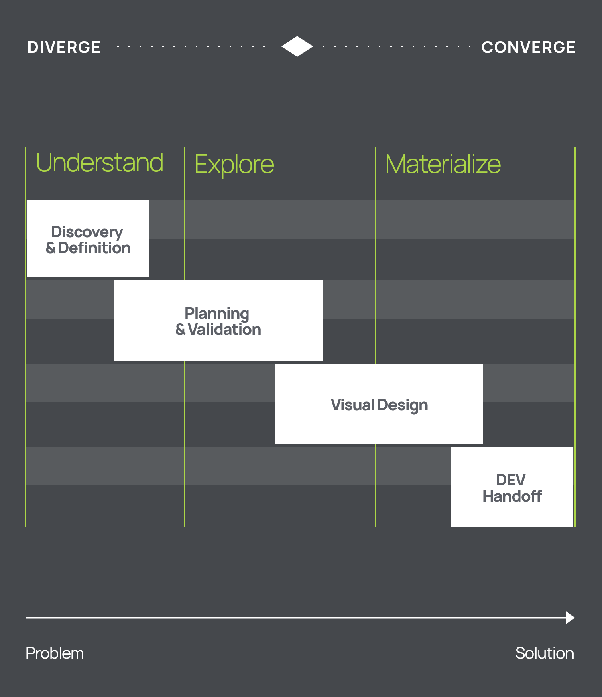
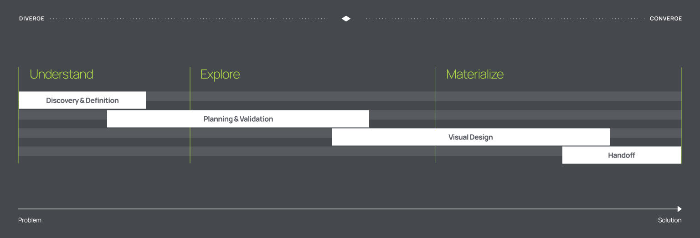

Feel free to hit me up, either for a chat about design, an opportunity or even a travel recommendation.
Sorin Cadar, UI Designer with a user-centric mindset
Sorin Cadar,
UI Designer with a user-centric mindset

I am an open-minded and egoless creative. I have a sensitive personality, which makes me pretty empathic and self-conscious. I enjoy using my visual design skills and my eye for aesthetics to solve real-life problems.

My journey into the visual design field began 12 years ago. Over the last 6 years, I have channeled my creativity and analytical thinking into the creation of digital products that help users complete their tasks with the least possible effort.
My mindset is not only user-centric, but also business-oriented. With a holistic approach to problem-solving, I find the best solutions by following an iterative process based on critique and constant feedback.
I love to create, explore, experiment and discover new things about the world. To do that, I use my meticulous attention to detail and my ability to see the big picture.
Psychology and human behavior intrigue me. I enjoy every opportunity to learn more about these topics.
The creative process is more powerful when many perspectives are involved. I enjoy working with different disciplines and seeing how all our ideas contribute to the ultimate solution.
Other than my enthusiasm for design and problem solving, I like to enjoy life to the fullest. I seek work-life balance, and I care deeply about my physical and mental health.
My greatest passions are travelling, hiking, cycling, mixing music, dancing at great music events and sharing my love for coffee.
What I Do
Specialized In
-
Interface Design
-
Wireframing
-
Prototyping
-
Interaction Design
-
Responsive Design
-
Design System
-
Atomic Design
-
Style Guide Definition
-
UI Motion
-
User Flow
Theory that I use
-
Visual Design Principles
-
Gestalt Principles
-
UI Design Guidelines & Patterns
-
UX and Interaction Design Principles
-
Usability Heuristics
-
UI Frameworks
-
Universal Design Principles
-
Emotional Design Principles
-
Accessibility Guidelines
-
Cognitive Biases
Tools that I use
-
Figma
-
Adobe XD
-
Adobe Photoshop
-
Adobe Illustrator
-
Adobe After Effects
-
Webflow
-
Protopie
-
Zeplin
-
Zeroheight
-
Anima
-
FigJam
-
Miro
-
Notion
-
HTML & CSS
Familiar with
-
Information Architecture
-
Journey Maps
-
Storyboards
-
User Personas
-
User Stories
-
The Five Whys
-
Heuristic Review
-
Usability Testing
-
A/B Testing
-
Card Sorting
-
Affinity Diagram
-
Competitve Analysis
How I Do It
My creative process is mainly based on the Double Diamond model. Other models also inspire me, such as IBM Loop, Design Thinking and The Five Levels of UX.
My creative process is mainly based on the Double Diamond model. Other models also inspire me, such as IBM Loop, Design Thinking and The Five Levels of UX.
I use the four main phases of the design process to logically organize my work and allow my thoughts to flow in a natural order. The process is not linear in any way. Understanding and creativity unfold differently in each project, so it's normal to go back and forth between these phases.

1
Discovery
& Definition
Discovery & Definition
At the beginning of a project, I aim to understand the problem. Following my team's discussions with the client and the stakeholders, we usually hold an internal discovery meeting.
Then, I analyze the initial information, and continue by doing my own research about the client's industry, the target audience and the relevant competitors. I immerse myself in the subject of the project to look for gaps in information and come up with the right questions. When my research is complete, I meet again with my team to discuss how to fill the gaps.
At the end of this phase, I aim to have a clear definition of the scope, the business goals, the user needs and the estimated timeline of the project.
2
Ideation
& Validation
Ideation & Validation
When the guidelines are clear, I begin the ideation process. I start brainstorming with pen and paper, and create rough sketches of various ideas and solutions. Then, I translate the ones that make the most sense into low-fidelity wireframes. To check if the functionalities support user and business goals, I prefer to connect all screens together and develop a low-fi prototype.
I proceed with developing the wireframe further by adding the information architecture and the content received from my team. The end result of this phase is a high fidelity wireframe-prototype that focuses on functionality and user interaction, providing only small hints about the layout, and completely ignoring the look and feel.
3
Visual Design
Visual Design
With a clear blueprint of the product, I can enter the visual design phase. At first, I do visual research. I also collect valuable UI inspiration. Based on my research, I build a moodboard that communicates the direction for the look and feel.
I continue with visual exploration, a back-and-forth process between defining a style guide and discovering multiple possible directions. When the exploration is done, I present my findings to the team.
After approving the look and feel, I design the high fidelity screens of the product, following the plan laid out in the final wireframes. Finally, I build a functional prototype that is used to validate the product.
4
Handoff
Handoff
In the last phase of my design process, I ensure that I transfer all the necessary materials to the developers. For a smooth handoff, I provide a developer-friendly design: I group and name all the layers according to the HTML structure, and I build all components following the implementation model.
I also adapt each screen at multiple resolutions, to demonstrate the design changes at certain breakpoints and the resize behavior between them.
In addition to the actual screens of the product, I provide the style guide, which is a single source of truth that documents visual design characteristics (colors and their use cases, typography styles, spacings, shadows, components, etc.)
Get in touch /
Get in touch /
Get in touch /
The best way to get in touch is through my email adress. Check the contact page for a complete list of contact details.
View
My Contact
Details
Get in touch /
Get in touch /
Get in touch /
Feel free to hit me up, either for a chat about design, an opportunity or even a travel recommendation.
The best way to get in touch is through my email adress. Check the contact page for a complete list of contact details.
View
My Contact
Details